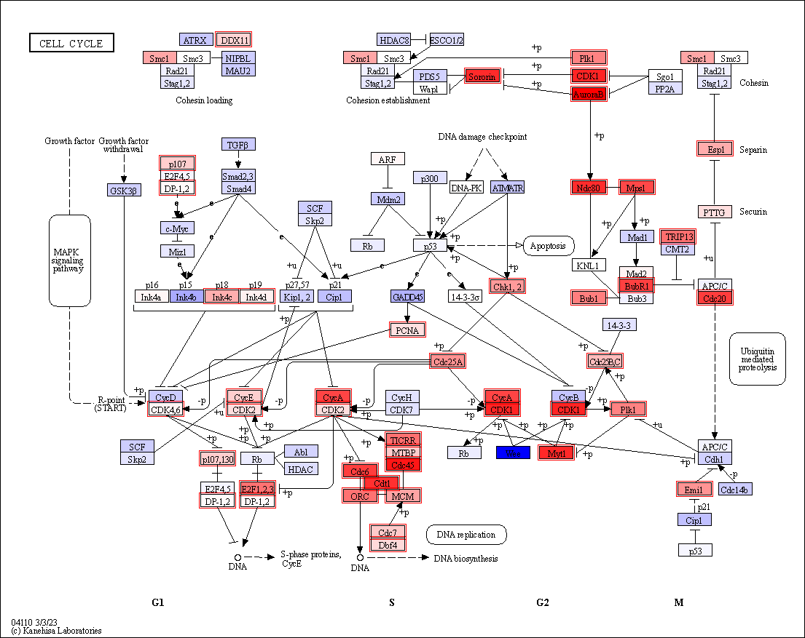

Example usage with PyDESeq2¶
The codes are derived from Step-by-step PyDESeq2 workflow. The dataset used was from the paper investigating BK polyomavirus infection in urothelial cells (Baker et al. Oncogene. 2022).
[1]:
import os
import pickle as pkl
from pydeseq2.dds import DeseqDataSet
from pydeseq2.ds import DeseqStats
from pydeseq2.utils import load_example_data
[2]:
import pandas as pd
count_df = pd.read_csv("../PRJNA728925_count.txt", sep="\t").T
count_df.head()
[2]:
| A1BG | A1BG-AS1 | A1CF | A2M | A2M-AS1 | A2ML1 | A2MP1 | A3GALT2 | A4GALT | A4GNT | ... | ZWILCH | ZWINT | ZXDA | ZXDB | ZXDC | ZYG11A | ZYG11B | ZYX | ZZEF1 | ZZZ3 | |
|---|---|---|---|---|---|---|---|---|---|---|---|---|---|---|---|---|---|---|---|---|---|
| SRR14509882 | 49 | 57 | 0 | 0 | 0 | 718 | 1 | 0 | 3682 | 0 | ... | 574 | 793 | 223 | 1320 | 882 | 1 | 1791 | 2787 | 2276 | 1576 |
| SRR14509883 | 106 | 82 | 0 | 12 | 6 | 83 | 0 | 0 | 1715 | 1 | ... | 731 | 1266 | 44 | 471 | 389 | 5 | 632 | 2127 | 871 | 676 |
| SRR14509884 | 67 | 36 | 2 | 25 | 5 | 499 | 0 | 0 | 2188 | 0 | ... | 1172 | 2256 | 122 | 741 | 732 | 14 | 915 | 3463 | 1419 | 1009 |
| SRR14509885 | 85 | 67 | 0 | 2 | 3 | 393 | 0 | 0 | 2155 | 2 | ... | 1348 | 3155 | 187 | 1566 | 738 | 26 | 1198 | 3738 | 2044 | 1051 |
| SRR14509886 | 29 | 42 | 0 | 2 | 2 | 76 | 0 | 0 | 2834 | 0 | ... | 298 | 137 | 205 | 743 | 852 | 0 | 1548 | 2878 | 1952 | 1297 |
5 rows × 29744 columns
[3]:
clinical_df = pd.read_csv("../SraRunTable_PRJNA728925.txt", sep=",")
clinical_df.index = clinical_df.Run
clinical_df.index.name = None
clinical_df.head()
[3]:
| Run | Assay Type | AvgSpotLen | Bases | BioProject | BioSample | Bytes | Center Name | Consent | DATASTORE filetype | ... | LibrarySelection | LibrarySource | Organism | Platform | ReleaseDate | Sample Name | source_name | SRA Study | Tissue | viral_infection | |
|---|---|---|---|---|---|---|---|---|---|---|---|---|---|---|---|---|---|---|---|---|---|
| SRR14509882 | SRR14509882 | RNA-Seq | 300 | 11066499600 | PRJNA728925 | SAMN19107552 | 3333844788 | GEO | public | sra,fastq | ... | cDNA | TRANSCRIPTOMIC | Homo sapiens | ILLUMINA | 2022-02-23T00:00:00Z | GSM5289794 | Normal human urothelial cells | SRP319465 | Ureter | BKPyV (Dunlop) MOI=1 |
| SRR14509883 | SRR14509883 | RNA-Seq | 302 | 8436386308 | PRJNA728925 | SAMN19107551 | 2801216097 | GEO | public | fastq,sra | ... | cDNA | TRANSCRIPTOMIC | Homo sapiens | ILLUMINA | 2022-02-23T00:00:00Z | GSM5289795 | Normal human urothelial cells | SRP319465 | Ureter | BKPyV (Dunlop) MOI=1 |
| SRR14509884 | SRR14509884 | RNA-Seq | 300 | 9742943700 | PRJNA728925 | SAMN19107550 | 3188119940 | GEO | public | fastq,sra | ... | cDNA | TRANSCRIPTOMIC | Homo sapiens | ILLUMINA | 2022-02-23T00:00:00Z | GSM5289796 | Normal human urothelial cells | SRP319465 | Ureter | BKPyV (Dunlop) MOI=1 |
| SRR14509885 | SRR14509885 | RNA-Seq | 300 | 11410353600 | PRJNA728925 | SAMN19107549 | 3722953816 | GEO | public | sra,fastq | ... | cDNA | TRANSCRIPTOMIC | Homo sapiens | ILLUMINA | 2022-02-23T00:00:00Z | GSM5289797 | Normal human urothelial cells | SRP319465 | Ureter | BKPyV (Dunlop) MOI=1 |
| SRR14509886 | SRR14509886 | RNA-Seq | 300 | 9985769400 | PRJNA728925 | SAMN19107548 | 3153799143 | GEO | public | sra,fastq | ... | cDNA | TRANSCRIPTOMIC | Homo sapiens | ILLUMINA | 2022-02-23T00:00:00Z | GSM5289798 | Normal human urothelial cells | SRP319465 | Ureter | No infection |
5 rows × 27 columns
[4]:
dds = DeseqDataSet(
counts=count_df,
clinical=clinical_df,
design_factors="viral_infection", # compare samples based on the "condition"
refit_cooks=True,
n_cpus=8,
)
[5]:
dds.fit_size_factors()
dds.fit_genewise_dispersions()
dds.fit_dispersion_trend()
dds.fit_dispersion_prior()
dds.fit_MAP_dispersions()
dds.fit_LFC()
Fitting size factors...
... done in 0.05 seconds.
Fitting dispersions...
... done in 3.05 seconds.
Fitting dispersion trend curve...
... done in 6.95 seconds.
Fitting MAP dispersions...
... done in 3.70 seconds.
Fitting LFCs...
... done in 1.91 seconds.
[6]:
dds.calculate_cooks()
if dds.refit_cooks:
# Replace outlier counts
dds.refit()
Refitting 357 outliers.
Fitting dispersions...
... done in 0.08 seconds.
Fitting MAP dispersions...
... done in 0.08 seconds.
Fitting LFCs...
... done in 0.08 seconds.
[7]:
stat_res = DeseqStats(dds, alpha=0.05,contrast=["viral_infection","BKPyV (Dunlop) MOI=1","No infection"])
stat_res.run_wald_test()
if stat_res.cooks_filter:
stat_res._cooks_filtering()
stat_res.p_values
if stat_res.independent_filter:
stat_res._independent_filtering()
else:
stat_res._p_value_adjustment()
stat_res.summary()
Running Wald tests...
... done in 3.29 seconds.
Log2 fold change & Wald test p-value: viral_infection BKPyV (Dunlop) MOI=1 vs No infection
| baseMean | log2FoldChange | lfcSE | stat | pvalue | padj | |
|---|---|---|---|---|---|---|
| A1BG | 65.042617 | -0.174495 | 0.274393 | -0.635932 | 0.524821 | 0.998845 |
| A1BG-AS1 | 60.814662 | -0.097512 | 0.260997 | -0.373613 | 0.708692 | 0.998845 |
| A1CF | 0.234785 | -0.438579 | 2.539843 | -0.172680 | 0.862903 | NaN |
| A2M | 3.841866 | 0.917285 | 0.822768 | 1.114876 | 0.264904 | 0.965674 |
| A2M-AS1 | 3.520622 | 0.412318 | 0.492133 | 0.837817 | 0.402133 | 0.994437 |
| ... | ... | ... | ... | ... | ... | ... |
| ZYG11A | 4.020418 | 0.989967 | 0.716537 | 1.381599 | 0.167095 | 0.906121 |
| ZYG11B | 1387.374886 | -0.189671 | 0.126651 | -1.497585 | 0.134241 | 0.873862 |
| ZYX | 2956.789644 | -0.056822 | 0.104073 | -0.545980 | 0.585079 | 0.998845 |
| ZZEF1 | 1916.557304 | -0.129015 | 0.110549 | -1.167041 | 0.243194 | 0.963318 |
| ZZZ3 | 1102.880698 | -0.019320 | 0.093984 | -0.205573 | 0.837124 | 0.998845 |
29744 rows × 6 columns
[8]:
stat_res_summary = stat_res.results_df
[9]:
sig_genes = stat_res_summary[stat_res_summary.padj<0.05].index
[10]:
lfc_key = stat_res_summary.log2FoldChange.to_dict()
Visualize the DEG information¶
Visualize the log2 fold changes of the genes in the certain pathway, and highlight DEGs.
[12]:
import pykegg
import requests_cache
import numpy as np
from PIL import Image
## Cache all the downloaded
requests_cache.install_cache('pykegg_cache')
[13]:
graph = pykegg.KGML_graph(pid="hsa04110")
[14]:
nds = graph.get_nodes()
[15]:
highlight_value = []
## If one of the symbols in identifiers in the nodes is in DEGs
for node in nds.graphics_name:
in_node = [i.replace("...","") for i in node.split(",")]
intersect = set(in_node) & set(sig_genes)
if len(intersect) > 0:
highlight_value.append(True)
else:
highlight_value.append(False)
[19]:
nds = pykegg.append_colors_continuous_values(nds, lfc_key)
[20]:
nds["highlight"] = highlight_value
[21]:
Image.fromarray(pykegg.overlay_opencv_image(nds,
pid="hsa04110",
highlight_nodes="highlight"))
[21]:

deseq2_raw_map() function¶
deseq2_raw_map serves as a wrapper function, consolidating the aforementioned example into a single function, with appending the colormap. It necessitates extracting PyDESeq2’s results_df as a DataFrame for input.
[61]:
pykegg.deseq2_raw_map(stat_res_summary, pid="hsa03460", legend_width=2)
[61]:

[ ]: